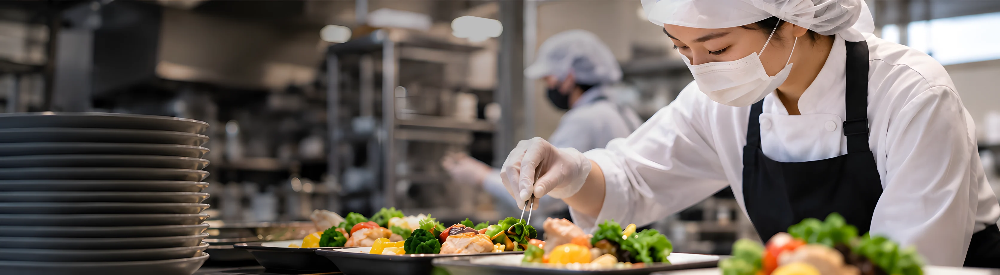

Daily Meals
毎日の食事
献立の工夫や季節の楽しみを、
写真とともにご紹介します。
今日も、食べるのが楽しみ。
管理栄養士や調理スタッフがアイデアを出し合い、
食べやすさとおいしさを両立できるよう、献立を見直しています。
いつもの食事
-
皮目まで香ばしく焼き上げた鮭が主菜です。レモンを添えてさっぱりと、小鉢二品と汁物で献立を整えました。焼き魚の定番として、毎日の食卓で親しまれている一食です。
-
定番の肉じゃがを主菜にした一食です。じゃがいもは煮くずれしない大きさに切り、味がしっかり染みるよう時間をかけて煮含めています。どこか懐かしい家庭の味を、毎日の食卓にお届けします。
-
甘辛く煮た牛肉と玉ねぎをごはんにのせた牛丼です。汁物と小鉢を添えて、全体の塩分は控えめに調整しています。玉ねぎはやわらかくなるまで煮て、甘みを引き出しました。
-
デミグラスソースで煮込んだハンバーグに、コーンライスを合わせた献立です。付け合わせの野菜で彩りを添えました。ハンバーグはソースで煮込むことで、やわらかく食べやすい仕上がりになっています。
-
夏場にお出しした、冷たい麺と彩り野菜の御膳です。トマトやコーンをちりばめて、食欲が落ちる時期でも箸が進むようにしました。つるりと食べやすい麺で、暑い日の水分補給にもつながります。
-
焼肉と錦糸卵をのせた丼です。野菜も一緒に炒めることで、一皿で主菜と副菜の役割を果たします。錦糸卵のやさしい甘さが焼肉の味を和らげ、最後まで飽きずに召し上がっていただけます。
-
豚肉とにんじん、いんげんを一緒に煮含めた主菜です。だしの香りを効かせ、塩分を抑えながら満足感のある味に整えています。野菜は食べやすい大きさにそろえ、やわらかく煮上げました。
-
チキンカツとオムライスを組み合わせた、人気の高い献立です。オムライスには顔をつけて、食卓が明るくなるようにしました。チキンカツは食べやすい大きさに切り分けてお出ししています。
-
チャーシューと卵、もやしをのせたラーメンです。炊き込みごはんと小鉢を添えて、麺だけでは不足しがちな栄養を補っています。麺は食べやすい長さに整え、スープは塩分を控えめに仕上げました。
-
身がほろりとほぐれるまで煮含めた魚の煮付けです。オクラを添えて彩りを加え、汁物と小鉢でバランスを整えました。甘辛い煮汁がごはんによく合う、落ち着いた味わいの一食です。
-
大根おろしでさっぱりと煮上げた鶏肉が主菜です。かぼちゃの煮物とわかめの和え物を添え、噛みやすさにも配慮しました。やさしい味付けで、毎日食べても飽きのこない献立です。
-
だしをきかせた肉うどんです。麺は食べやすい長さに整え、ごはんと小鉢を添えて一食分の栄養を確保しています。温かいだしで、体の内側からほっと温まる献立です。
-
下味をつけて揚げた白身魚の竜田揚げです。やわらかい食感に仕上げ、飲み込みやすさにも気を配っています。衣は軽く仕上げて、魚のうま味を感じていただけるようにしました。
-
香ばしく焼き上げた魚に、レモンと大葉を添えた一食です。煮物と和え物の小鉢、汁物を合わせ、落ち着いた味わいの献立に整えました。レモンのさっぱりとした香りで、魚が食べやすくなります。
-
揚げたての唐揚げを主菜にした御膳です。薄切りの野菜で巻いた一口寿司とフルーツの小鉢を添えて、彩りよく仕上げました。唐揚げは下味をしっかりつけ、外は香ばしく中はやわらかい食感に仕上げています。
行事食
-
節目の日にお出しした仕切り弁当です。海老フライや焼き魚、三色のおにぎりを詰め合わせ、開けた瞬間に楽しんでいただけるようにしました。少しずついろいろな味を楽しめる、お祝いの日ならではの一食です。
-
揚げたての天ぷらと、刺身をのせた海鮮ちらしを主菜にした御膳です。サラダと汁物、デザートまで添えて、華やかな一食に仕上げました。品数を多くしながらも一品ずつの量を整え、食べきりやすくしています。
-
行事の日にお出ししたお弁当です。海苔で顔をつくったパンダのおにぎりに、海老フライやウインナーを詰め合わせました。ふたを開けたときに笑顔になっていただけるよう、一つずつ手作業で仕上げています。
-
錦糸卵と桜でんぶを散らしたちらしに、天ぷらを合わせた御膳です。笑顔の形のスマイルポテトを添えて、食卓が楽しくなるようにしました。天ぷらは衣を薄めにして軽く揚げ、最後まで食べ疲れしないよう仕上げています。
-
土用の丑の日にお出ししたうなぎ丼です。茶そばと小鉢を添えて、暑い時期でも食が進むように仕上げました。季節の行事にちなんだ献立で、夏の体力づくりを食事から支えます。
-
新年を祝うおせちです。彩りよく盛り付けた料理で、お正月の食卓を華やかに彩ります。
-
かぼちゃやちくわを揚げた天ぷらの御膳です。黒ごまを振ったごはんと合わせ、秋らしい献立に仕上げました。季節の食材を取り入れて、食卓から季節の移り変わりを感じていただけるようにしています。
-
クリスマスの日の献立です。焼きたてのグラタンと海老フライに、雪だるまに見立てた飾りとムースを添えました。季節の行事を食卓からも楽しんでいただけるよう、盛り付けにも工夫を重ねています。
-
雛人形を飾ってお出ししたひな祭りの御膳です。ちらし寿司と天ぷら、桜色のデザートで春の訪れを表しました。行事の雰囲気ごと味わっていただけるよう、飾り付けにもこだわっています。
-
いなり寿司と巻き寿司に、ローストビーフを合わせた御膳です。行事の日に、少しずついろいろな味を楽しめるよう組み立てました。和と洋を組み合わせた、特別な日らしい華やかな一食です。
-
新しい一年の始まりにお出しする御膳です。お祝いの日らしい彩りと盛り付けで、お正月の食卓を楽しんでいただけるようにしました。
-
運動会の日にお出ししたお弁当です。揚げ物や煮物、卵焼きを彩りよく詰め合わせ、食べやすい形に整えました。
-
新年を祝うお正月の御膳です。料理を少しずつ彩りよく盛り付け、お祝いの日の食卓を華やかに彩ります。
デザート
-
ハロウィンパーティーの日に作ったケーキです。スポンジを重ねた生地に、かぼちゃのお菓子でジャック・オ・ランタンの顔を飾りつけました。季節のイベントを、味と見た目の両方で楽しんでいただきました。
-
クリスマス会のために作ったカップケーキです。いちごと生クリームでサンタの帽子をつくり、一つずつ顔を描きました。表情が一つひとつ違うのも、手づくりならではの楽しさです。
-
トナカイをモチーフにしたチョコレートケーキです。顔の飾りが目を引く、クリスマスらしいデザートです。
-
おやつの時間にお出ししたモンブランです。栗のクリームを絞って犬の顔をつくり、一つずつ手作業で仕上げました。おやつの時間が待ち遠しくなるような、楽しい見た目を大切にしています。
-
お祝いの日のために焼いたケーキです。クッキーでくまの顔をつくり、メッセージプレートを添えて一人ひとりにお出ししました。お祝いの気持ちが伝わるよう、一つずつ丁寧に飾り付けています。
-
パイナップルやメロン、ぶどうを盛り合わせたデザートです。季節の果物を食べやすい大きさに切り分けています。色とりどりの果物で、食後のひとときを華やかに演出しました。
-
ふんわりと焼き上げたシフォンケーキです。生クリームとミントを添えて、口当たりよく仕上げました。軽い食感なので、食後のデザートとしても召し上がりやすい一品です。
-
イベントの日に作った大きなデコレーションケーキです。生クリームで顔を立体的に絞り、いちごやぶどうで周りを飾りました。皆さまで切り分けて召し上がる、イベントの主役となる一品です。
-
焼き上げたタルトに、季節の果物といちごをたっぷりのせました。切り分けてお出しする、特別な日のデザートです。さくっとした生地と果物のみずみずしさを一緒に楽しんでいただけます。
ビュッフェ
-
ビュッフェの大皿料理です。豚肉とパプリカ、キャベツを手早く炒め、トマトを敷いて彩りよく盛り付けました。野菜の食感を残すよう火加減に気を配り、取り分けやすい大きさにそろえています。
-
白身魚にレモンを添えて焼き上げました。さっぱりとした香りとともに楽しめる、ビュッフェの一品です。
-
だしをたっぷり含ませて巻いた玉子焼きです。切り分けて大皿に並べ、ビュッフェの定番としてお出ししています。口に含むとだしがじゅわっと広がる、やさしい味わいです。
-
行事の日に用意する大鉢のちらし寿司です。錦糸卵をたっぷり散らし、みんなで取り分けながら召し上がっていただきます。大鉢を囲むことで、会話も自然と弾む一品です。
-
具材を彩りよく巻き込んだ太巻きです。一口で食べやすい厚さに切りそろえて並べました。断面の色合いが美しく、ビュッフェの大皿をぱっと華やかにしてくれます。
-
豚の角煮にトマトを添えた一品です。彩りを添えて、ビュッフェで取り分けやすく盛り付けました。
-
イベントの日に並べたビュッフェの様子です。揚げ物から和え物まで、少しずついろいろな料理を選んでいただけます。好きなものを好きなだけ選べる楽しさも、食事の大切な一部と考えています。
-
揚げたてのフライとポテトサラダを中心に並べた大皿です。温かいものと冷たいものを分けて配置しています。料理ごとにおいしく召し上がれる温度を保てるよう、並べ方にも気を配りました。
-
海老フライと唐揚げを大皿に盛り合わせた一品です。二種類の揚げ物を並べた、ビュッフェの盛り付け例をご紹介します。
-
素材ごとの色と食感を生かした炊き合わせです。だしのやさしい味わいで、素材そのもののおいしさを感じていただけます。
Contact
食事のこと、まずはお話ししませんか。
給食委託のご相談は、お電話またはフォームからお気軽にどうぞ。